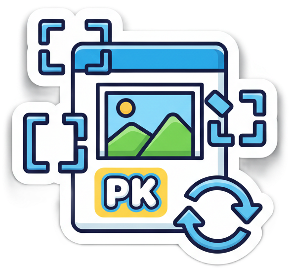

01
Déposez
Glissez votre image dans ImgRalph ou choisissez-la depuis votre appareil.
outil d'image local · gratuit
Détourez vos images en quelques secondes, directement dans votre navigateur. Aucun compte. Aucun fichier envoyé.

Votre image ne quitte jamais votre machine.
Pas de compte à créer.
Un PNG propre, en un clic.
le geste est simple
Glissez votre image dans ImgRalph ou choisissez-la depuis votre appareil.
Le modèle ONNX travaille dans le navigateur. Vos pixels restent chez vous.
Récupérez un PNG transparent, automatiquement recadré au contenu.
à vous l'image